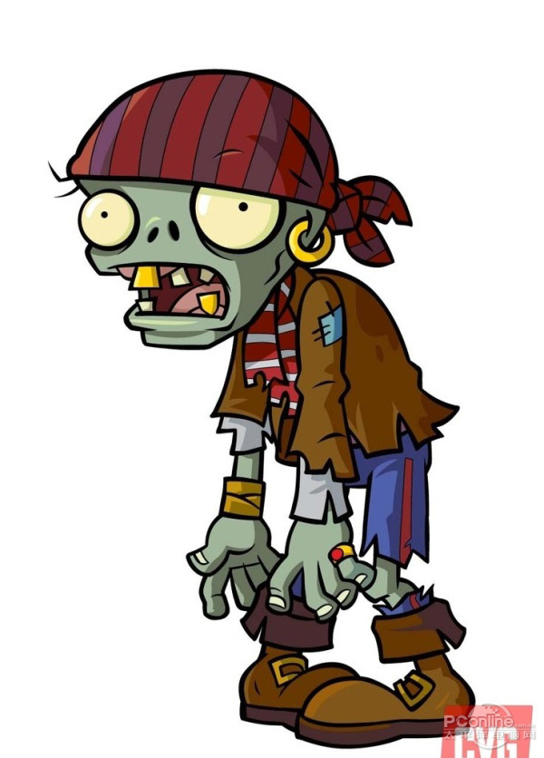

僵尸爱吃人脑。 这里有活人！~~ No~！！！~~~！ 味道好极了！~ 
两行数据，每行两个数据，X表示僵尸数量，Y表示活人数量
僵尸吃活人的脑子，如果保证每个僵尸至少吃上一个活脑，僵尸们就集体Mmm Brains~~，否则，僵尸们大吼No Brains！！
4 5
4 3
Mmm Brains~~
No Brains!!
输入两行数字,每行第一个数为僵尸数X,第二个数为活人数量Y,如果X<=Y,则输出"Mmm Brains~~"，否则输出"No Brains！！".
还没写,坐等大佬!
#include<iostream>
using namespace std;
int main() {
int N=2;
while (N--) {
int x, y;
cin >> x >> y;
if (x <= y) cout << "Mmm Brains~~" << endl;
else cout << "No Brains!!" << endl;
}
return 0;
}